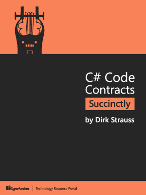
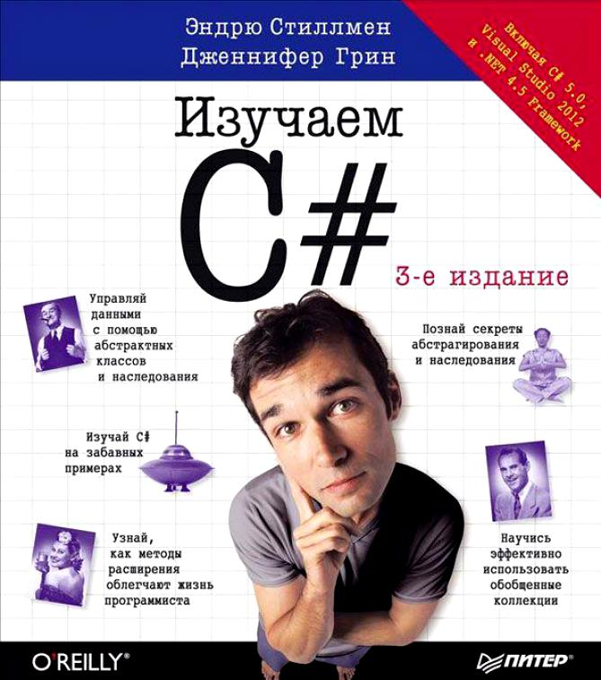
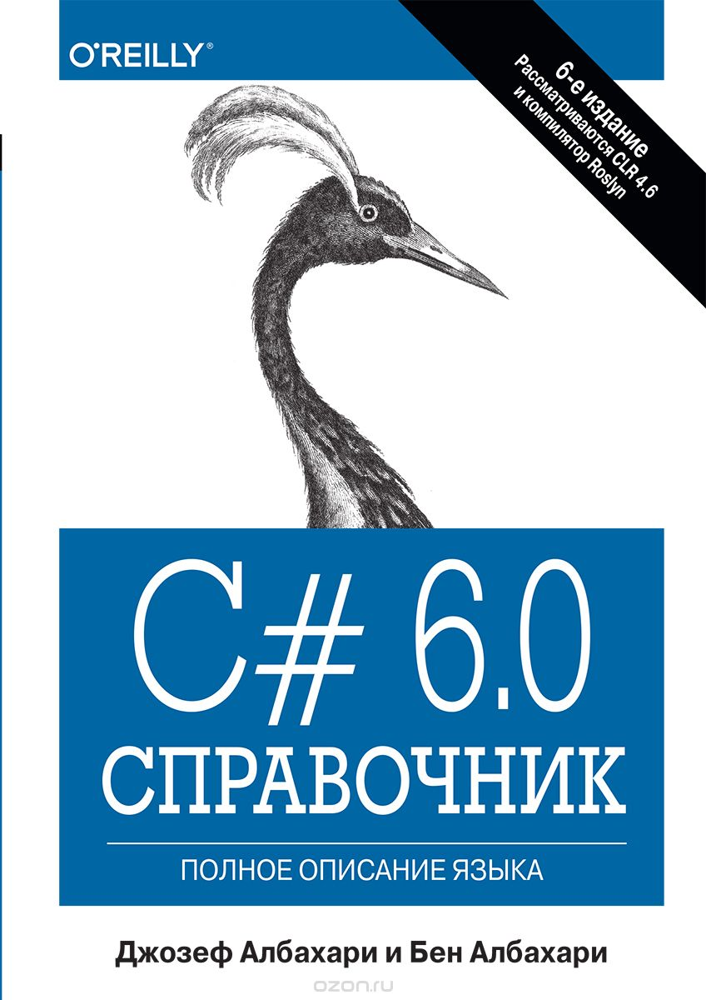

C# — объектно-ориентированный язык программирования, созданный в 1998–2001 годах компанией Microsoft как язык разработки приложений для платформы Microsoft .NET Framework. Он совмещает в себе силу и гибкость C++ с простотой Visual Basic.
 Эта книга рассказывает о создании кроссплатформенных мобильных приложений при помощи Xamarin.Forms. Рассматриваются такие темы, как анимация, MVVM, триггеры, поведения, макеты и рендеры.
Эта книга рассказывает о создании кроссплатформенных мобильных приложений при помощи Xamarin.Forms. Рассматриваются такие темы, как анимация, MVVM, триггеры, поведения, макеты и рендеры.
 Данная книга предназначена для новичков. Она учит вас мыслить как программист, а C# в данном случае — просто инструмент, который можно заменить на Java, C++, PHP или Python. Это книга о программировании, а не о C#.
Данная книга предназначена для новичков. Она учит вас мыслить как программист, а C# в данном случае — просто инструмент, который можно заменить на Java, C++, PHP или Python. Это книга о программировании, а не о C#.
Она была написана командой болгарских разработчиков, затем её перевели на английский.
 Контрактное программирование — это метод проектирования ПО, предполагающий, что проектировщик должен определить формальные, точные и верифицируемые спецификации интерфейсов для компонентов системы. В C# такой подход реализуется при помощи библиотеки Code Contracts, об использовании которой и рассказывает эта книга.
 В отличие от большинства книг по программированию, построенных на основе скучного изложения спецификаций и примеров, с этой книгой читатель сможет сразу приступить к написанию собственного кода на языке программирования С# с самого начала.
 Изучите все аспекты языка С#, начиная с основ синтаксиса и переменных и заканчивая сложными темами, такими как указатели и перегрузка операций. Научитесь пользоваться языком LІNQ благодаря трем посвященным ему главам. Освойте динамическое, асинхронное и параллельное программирование. Получите навыки работы со средствами .NЕT, в числе которых ХML, взаимодействие с сетью, сериализация, рефлексия, безопасность, домены приложений и контракты кода. Исследуйте новый компилятор как службу С# 6.0 под названием Rоslуn.